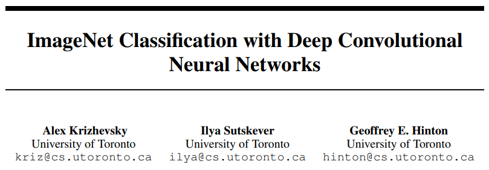
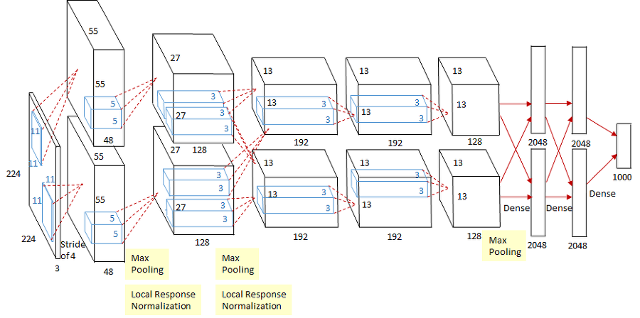
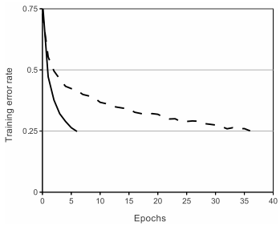
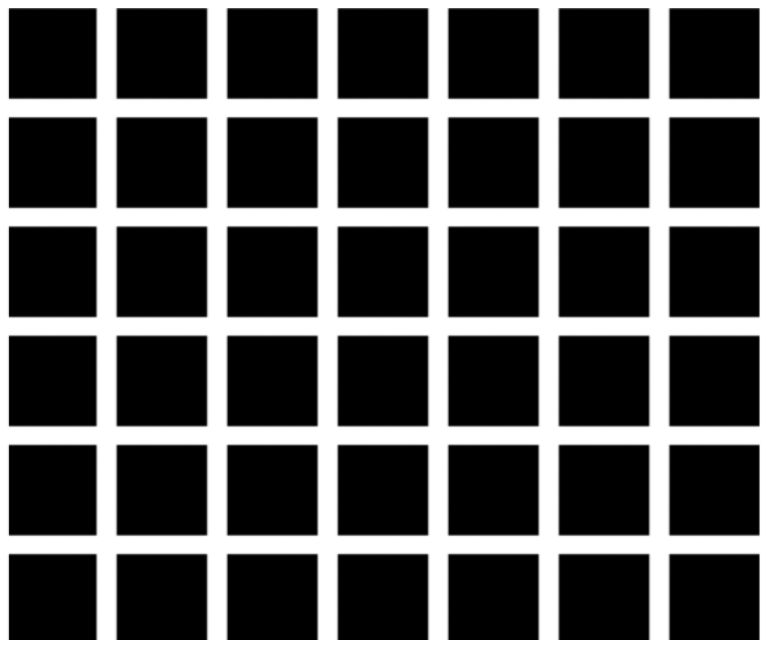
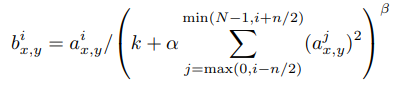
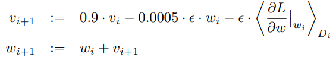

ImageNet Classification with Deep Convolutional Neural Networks
↑ 논문 링크 ↑
AlexNet
영상 데이터 베이스를 기반으로 한 인식 대회 'ILSVRC 2012'에서 우승한 CNN 구조
Neural network
: 6천만 parameters, 65만 neurons, 5 convolutional layers, (some) max-pooling layers, 3 fully-connected layers, final 1000-way softmax
To make training faster
: non-saturating (y값 범위에 제한이 없는) neurons, GPU
To reduce overfitting
: dropout
Dataset
Data
ImageNet dataset
22,000개 범주로 구성, 1500만개의 고해상도 이미지
ILSVRC 대회는 ImageNet dataset의 subset을 이용, 각 1000개의 이미지를 포함하는 범주 1000개 이용
약 120만개의 training 이미지, 5만개의 validation 이미지, 15만개의 test 이미지로 구성
Data 전처리
두 가지 방법
1.
FC layer 입력 크기 고정 때문에 이미지를 동일한 크기 (256 X 256) 고정
이미지의 너비와 높이 중 더 짧은 쪽을 256으로 고정시키고 중앙 부분을 crop
2.
이미지 각 픽셀에서 train set 평균 빼는 것으로 normalize
Architecture

| input | 224x224x3 크기의 이미지 | ||
| Conv1 | 96 kernels of size 11x11, stride=4, padding=0 | input : 224x224x3 |
output : 55x55x96 |
| MaxPool1 | 3x3 kernels, stride=2 | input : 55x55x96 |
output : 27x27x96 |
| Norm1 | LRN | input : 27x27x96 | output : 27x27x96 |
| Conv2 | 256 kernels of size 5x5, stride=1, Padding=2 | input : 27x27x96 | output : 27x27x256 |
| MaxPool2 | 3x3 kernels, stride = 2 | input : 27x27x256 | output : 13x13x256 |
| Norm2 | LRN | input : 13x13x256 | output : 13x13x256 |
| Conv3 | 384 kernels of size 3x3, stride=1, padding=1 | input : 13x13x256 |
output : 13x13x384 |
| Conv4 | 384 kernels of size 3x3, stride=1, padding=1 | input : 13x13x384 |
output : 13x13x256 |
| Conv5 | 256 kernels of size 3x3, stride=1, padding=1 | input : 13x13x384 |
output : 13x13x256 |
| MaxPool3 | 3x3 kernels, stride=2 | input : 13x13x256 |
output : 6x6x256 |
| FC1 | fully connected layer with 4096 neurons | input : 6x6x256 |
output : 4096 |
| FC2 | fully connected layer with 4096 neurons | input : 4096 |
output : 4096 |
| output | fully connected layer with 1000-way softmax | input : 4096 |
output : 1000 |
ReLU Nonlinearity
모델 학습 속도 향상
기존(LeNet-5)에는 tanh, sigmoid 같은 saturating nonlinearity 활성화 함수를 많이 사용
→ saturating nonlinearit: 어떤 입력 x가 무한대로 갈때 함수의 값이 어떤 범위내에서만 움직이는
AlexNet에서는 non-saturating nonlinearity 함수인 ReLU 함수를 사용
ReLU: f(x) = max(0, x)

굵은 선 - ReLU, 점선 - tanh
ReLU 함수를 이용했을 때 training error rate 25%까지
6배 빨리 도달
더 빨라진 학습은 대규모 data set에서 학습된
대형 모델의 성능에 큰 영향
Training on Multiple GPUs
모델 학습 속도 향상, 오차 감소
2개의 GPU를 기반으로 한 병렬 구조
각 GPU는 3번쨰 convolutional layer와 fully-connected layer를 제외하고 독립적으로 학습
1개의 GPU를 썼을 때와 비교하면 training error 1.7% (top-1 기준, top-5는 1.2%) 감소, 학습 시간 감소
Local Response Normalization
오차 감소
LRN: 활성화된 뉴런이 주변 이웃 뉴런들을 억누르는 신경생물학 lateral inhibition 현상 모델링
강하게 활성화된 뉴런의 주변 이웃들에 대해서 normalization


(i번째 kernel map의 x, y 지점의 값) / ((i-n/2)번째부터 (i+n/2)번째까지 kernel map x, y 지점 값들의 합)
error 1.4% (top-1 기준, top-5는 1.2%) 감소
* 현재는 LRN 대신 batch normalization, group normalization을 사용
Overlapping Pooling
오차 감소
CNN에서 pooling layer의 역할은 feature map size 줄이기
AlexNet에서는 Max pooling 사용 (이전 LeNet-5은 average pooling)
pooling unit 크기가 stride 크기보다 더 큰 overlapping pooling 기법 사용
overlapping 풀링을 하면 풀링 커널이 중첩, non-overlapping 풀링을 하면 중첩 없음
error 0.4% (top-1 기준, top-5는 0.3%) 감소
overfitting 개선
Reducing Overfitting
Data Augmentation
label-preserving transformation, 논문에서 두 가지 방법 사용
1. image translations, horizontal reflections (이동과 좌우반전)
원본 이미지 (256 X 256) 랜덤하게 잘라 227 X 227 (*논문 내 224는 오타) 이미지를 만들고,
+ test set은 중앙, 좌상하, 우상하로 crop
전체 이미지를 반전시킨 버전으로 한 번 더 만들기
data set 2048배 증가
2. PCA
이미지의 각 픽셀 RGB 값에 PCA를 적용
RGB 각 색상에 대한 eigenvalue와
평균 0, 표준편차 0.1인 가우시안 분포에서 추출한 랜덤 변수를 곱해서
RGB 값에 더하기
error 1% (top-1 기준) 감소
Dropout
특정 뉴런의 출력을 일정 확률로 0으로 만드는 기법
dropout을 사용하면 뉴런이 특정 다른 뉴런에 의존하지 않기 때문에 뉴런의 co-adaptation 감소 (큰 값의 node에 영향을 덜 받게)
train에서 두 개의 FC layer에만 dropout 적용, test에서는 모든 뉴런을 사용했지만 뉴런의 결과값에 0.5를 곱함
Details of learning
- loss function: cross entropy, multi-class classification에는 주로 CE를 씀
- momentum=0.9, batch size=128, weight decay=0.005로 설정한 SGD
- weight decay

- weight는 μ=0,σ=0.01의 정규분포로 초기화
- bias는 2, 4, 5번째 convolutional layer와 FC layer들에 한해 1로 초기화 (양수값을 통해 ReLU의 초기 학습을 가속), 나머지는 0으로 초기화
- learning rate는 초기 0.01로 설정해 오차가 더 이상 줄지 않으면 10으로 나눔, 총 세 번 나뉨
- 120만 장 이미지 약 90번씩 학습, 6일 소요
Code
기본 설정
# 필요한 라이브러리 import
import os
import torch
import torch.nn as nn
import torch.optim as optim
import torch.nn.functional as F
from torch.utils import data
import torchvision.datasets as datasets
import torchvision.transforms as transforms
from tensorboardX import SummaryWriter
# pytorch device 정의하기
device = torch.device('cuda' if torch.cuda.is_available() else 'cpu')
# model parameters 정의하기
NUM_EPOCHS = 90
BATCH_SIZE = 128
MOMENTUM = 0.9
LR_DECAY = 0.0005
LR_INIT = 0.01
IMAGE_DIM = 227 # pixels
NUM_CLASSES = 1000
DEVICE_IDS = [0, 1, 2, 3]
# data directory 지정하기
INPUT_ROOT_DIR = 'alexnet_data_in'
TRAIN_IMG_DIR = 'alexnet_data_in/imagenet'
OUTPUT_DIR = 'alexnet_data_out'
LOG_DIR = OUTPUT_DIR + '/tblogs' # tensorboard logs
CHECKPOINT_DIR = OUTPUT_DIR + '/models' # model checkpoints
# checkpoint 경로 directory 만들기
os.makedirs(CHECKPOINT_DIR, exist_ok=True)모델 정의
class AlexNet(nn.Module):
def __init__(self, num_classes=1000):
super().__init__()
# input size : (b x 3 x 227 x 227)
# 논문에는 image 크기가 224 pixel이라고 나와 있지만, conv1d 이후에
# 차원은 55x55를 따르지 않습니다. 따라서 227x227로 변경해줍니다.
self.net = nn.Sequential(
nn.Conv2d(in_channels=3, out_channels=96, kernel_size=11, stride=4), # (b x 96 x 55 x 55)
nn.ReLU(),
nn.LocalResponseNorm(size=5, alpha=0.0001, beta=0.75, k=2), # LRN
nn.MaxPool2d(kernel_size=3, stride=2), # (b x 96 x 27 x 27)
nn.Conv2d(96, 256, 5, padding=2), # (b x 256 x 27 x 27)
nn.ReLU(),
nn.LocalResponseNorm(size=5, alpha=0.0001, beta=0.75, k=2),
nn.MaxPool2d(kernel_size=3, stride=2), # (b x 256 x 13 x 13)
nn.Conv2d(256, 384, 3, padding=1), # (b x 384 x 13 x 13)
nn.ReLU(),
nn.Conv2d(384, 384, 3, padding=1), # (b x 384 x 13 x 13)
nn.ReLU(),
nn.Conv2d(384, 256, 3, padding=1), # (b x 256 x 13 x 13)
nn.ReLU(),
nn.MaxPool2d(kernel_size=3, stride=2), # (b x 256 x 6 x 6)
)
# FC layer 설정
self.classifier = nn.Sequential(
nn.Dropout(p=0.5, inplace=True),
nn.Linear(in_features=(256 * 6 * 6), out_features=4096),
nn.ReLU(),
nn.Dropout(p=0.5, inplace=True),
nn.Linear(in_features=4096, out_features=4096),
nn.ReLU(),
nn.Linear(in_features=4096, out_features=num_classes),
)
self.init_bias() # bias 초기화
def init_bias(self):
for layer in self.net:
if isinstance(layer, nn.Conv2d):
# weight와 bias 초기화
nn.init.normal_(layer.weight, mean=0, std=0.01)
nn.init.constant_(layer.bias, 0)
# 논문에 2,4,5 conv2d layer의 bias는 1로 초기화한다고 나와있습니다.
nn.init.constant_(self.net[4].bias, 1)
nn.init.constant_(self.net[10].bias, 1)
nn.init.constant_(self.net[12].bias, 1)
def forward(self,x):
x = self.net(x)
x = x.view(-1, 256 * 6 * 6)
return self.classifier(x)데이터 전처리, 손실함수, optimizer 설정, 학습하기
if __name__ == '__main__':
# seed value 출력하기
seed = torch.initial_seed()
print('Used seed : {}'.format(seed))
tbwriter = SummaryWriter(log_dir=LOG_DIR)
print('TensorboardX summary writer created')
# model 생성하기
alexnet = AlexNet(num_classes=NUM_CLASSES).to(device)
# 다수의 GPU에서 train
alexnet = torch.nn.parallel.DataParallel(alexnet, device_ids=DEVICE_IDS)
print(alexnet)
print('AlexNet created')
# dataset과 data loader 생성하기
dataset = datasets.ImageFolder(TRAIN_IMG_DIR, transforms.Compose([
# transforms.RandomResizedCrop(IMAGE_DIM, scale=(0.9, 1.0), ratio=(0.9, 1.1)),
transforms.CenterCrop(IMAGE_DIM),
# transforms.RandomHorizontalFlip(),
transforms.ToTensor(),
transforms.Normalize(mean=[0.485, 0.456, 0.406], std=[0.229, 0.224, 0.225]),
]))
print('Dataset created')
dataloader = data.DataLoader(
dataset,
shuffle=True,
pin_memory=True,
num_workers=8,
drop_last=True,
batch_size=BATCH_SIZE)
print('Dataloader created')
# optimizer 생성하기
optimizer = optim.SGD(
params=alexnet.parameters(),
lr=LR_INIT,
momentum=MOMENTUM,
weight_decay=LR_DECAY)
print('Optimizer created')
# lr_scheduler로 LR 감소시키기 : 30epochs 마다 1/10
lr_scheduler = optim.lr_scheduler.StepLR(optimizer, step_size=30, gamma=0.1)
print('LR Scheduler created')
# train 시작
print('Starting training...')
total_steps = 1
for epoch in range(NUM_EPOCHS):
lr_scheduler.step()
for imgs, classes in dataloader:
imgs, classes = imgs.to(device), classes.to(device)
# loss 계산
output = alexnet(imgs)
loss = F.cross_entropy(output, classes)
# parameter 갱신
optimizer.zero_grad()
loss.backward()
optimizer.step()
# log the information and add to tensorboard
# 정보를 기록하고 tensorboard에 추가하기
if total_steps % 10 == 0:
with torch.no_grad():
_, preds = torch.max(output, 1)
accuracy = torch.sum(preds == classes)
print('Epoch: {} \tStep: {} \tLoss: {:.4f} \tAcc: {}'
.format(epoch + 1, total_steps, loss.item(), accuracy.item()))
tbwriter.add_scalar('loss', loss.item(), total_steps)
tbwriter.add_scalar('accuracy', accuracy.item(), total_steps)
# gradient values와 parameter average values 추력하기
if total_steps % 100 == 0:
with torch.no_grad():
# parameters의 grad 출력하고 저장하기
# parameters values 출력하고 저장하기
print('*' * 10)
for name, parameter in alexnet.named_parameters():
if parameter.grad is not None:
avg_grad = torch.mean(parameter.grad)
print('\t{} - grad_avg: {}'.format(name, avg_grad))
tbwriter.add_scalar('grad_avg/{}'.format(name), avg_grad.item(), total_steps)
tbwriter.add_histogram('grad/{}'.format(name),
parameter.grad.cpu().numpy(), total_steps)
if parameter.data is not None:
avg_weight = torch.mean(parameter.data)
print('\t{} - param_avg: {}'.format(name, avg_weight))
tbwriter.add_histogram('weight/{}'.format(name),
parameter.data.cpu().numpy(), total_steps)
tbwriter.add_scalar('weight_avg/{}'.format(name), avg_weight.item(), total_steps)
total_steps += 1
# checkpoints 저장하기
checkpoint_path = os.path.join(CHECKPOINT_DIR, 'alexnet_states_e{}.pkl'.format(epoch + 1))
state = {
'epoch': epoch,
'total_steps': total_steps,
'optimizer': optimizer.state_dict(),
'model': alexnet.state_dict(),
'seed': seed,
}
torch.save(state, checkpoint_path)